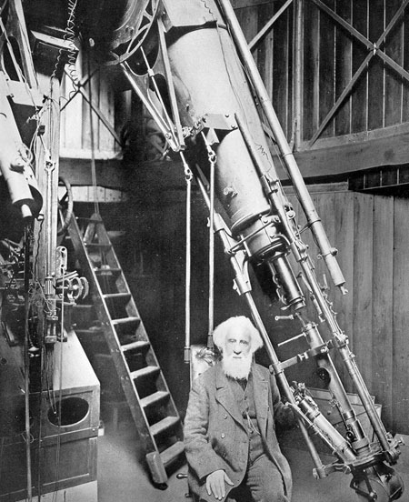

On the subject of stars, all investigations which are not ultimately reducible to simple visual observations are ... necessarily denied to us. While we can conceive of the possibility of determining their shapes, their sizes, and their motions, we shall never be able by any means to study their chemical composition or their mineralogical structure ... Our knowledge concerning their gaseous envelopes is necessarily limited to their existence, size ... and refractive power, we shall not at all be able to determine their chemical composition or even their density... I regard any notion concerning the true mean temperature of the various stars as forever denied to us.Here, Comte is assuming that the determination of composition, density, temperature, etc., would require one to obtain physical samples of the stars---obviously, a very difficult proposition even today.  However, only 14 years later, the physicist Gustav Kirchhoff discovered that the temperature and chemical composition of a gas could be deduced from its electromagnetic spectrum viewed from an arbitrary distance. This method was extended to astronomical bodies by William Huggins in 1864, who was the first to use a a spectroscope attached to a telescope. (See image at right.) Not only have we learned how to determine the chemical composition of distant stars and nebulae, but the element helium (the second most abundant in the universe) was first identified in the spectrum of the Sun, rather than in an earthbound laboratory. Today we use spectroscopy to measure chemical abundances, temperatures, velocities, rotations, ionization states, magnetic fields, pressure, turbulence, density, and many other properties of distant planets, stars, and galaxies. Some objects studied this way are over 10 billion light years away. Spectroscopy is the richest source of information about the universe. In its laboratory setting, spectroscopy provided the experimental basis for quantum mechanics. Two lessons: nature usually outstrips the human imagination. And philosophers often get science wrong.
Last modified December 2020 by rwo
{kind=link}